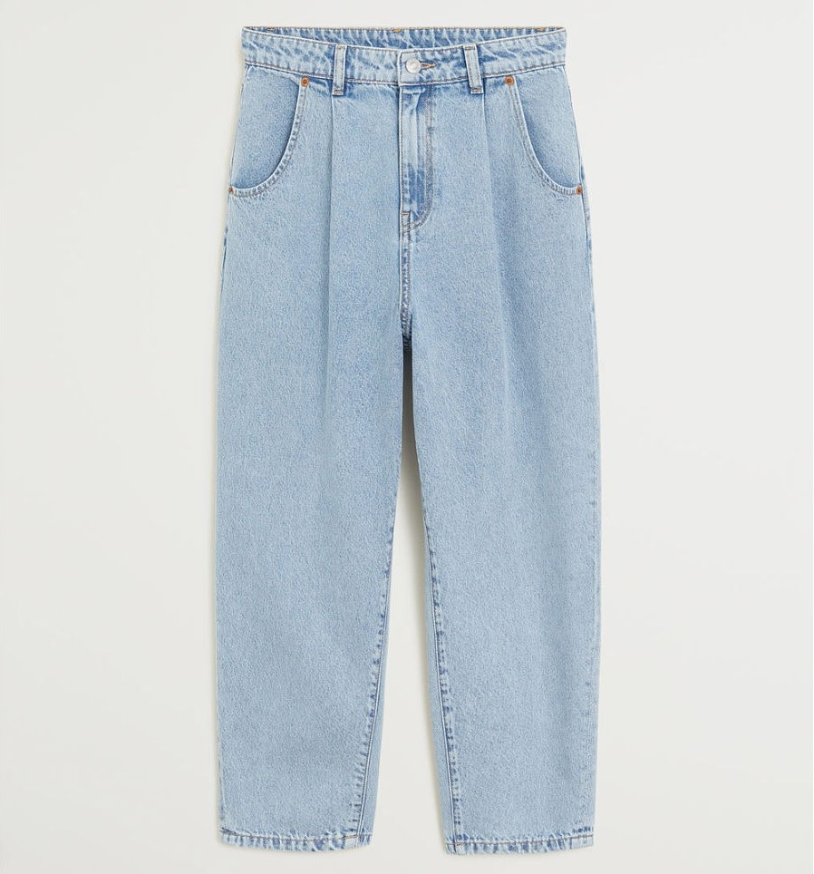
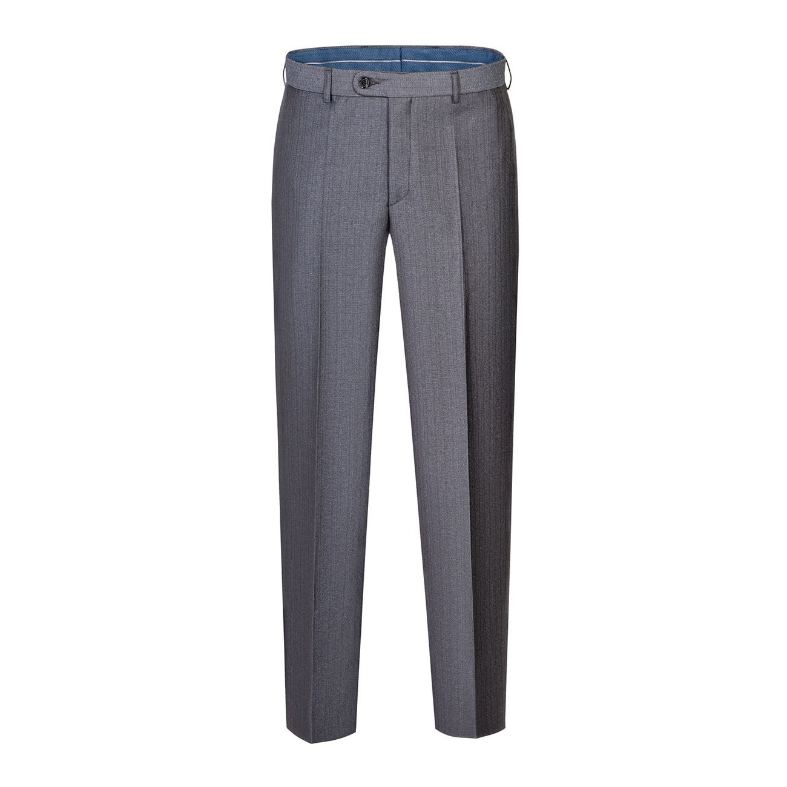
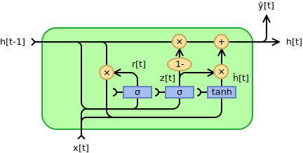

День четвертый - нейросети (изображения, тексты, многомерные ряды)¶
Программа дня:
нейронные сети с помощью библиотеки
keras, устройство нейросетей,сети, которые выдают свой вход и зачем они нужны - автоэнкодеры,
элементы работы с изображениями: классификация, сегментация
предобученные сети работы с изображениями,
тексты: кодирование, поиск “по смыслу”, извлечение сущностей, суммаризация,
многомерные временные ряды (и рекуррентные нейронные сети).
4.1 Нейронные сети на keras¶
В конце второго дня мы рассмотрели некоторый пример нейронных сетей. Все слои там были одинаковые по устройству, и каждый нейрон слоя был связан с каждым нейроном следующего. Такие сети и слои называют полносвязными (Dense), и это только один из типов слоёв. Ввиду количества связей, полносвязные сети содержат просто огромное количество параметров, из-за этого они долго учатся и дают не самую минимальную ошибку (на не очень большом количестве данных).
Помните, для градиентного спуска мы искали производную по каждому параметру? То же делает и библиотека tensorflow (от Google), только она дифференцирует по параметрам автоматически вместо нас (благодаря особой математике на графах операций). keras - это надстройка над библиотекой tensorflow, позволяющая конструировать различные нейросети, и искать с заданной функцией ошибки её минимум.
Библиотека scikit-learn в отличие от keras, работает только с полносвязными сетями, и не позволяет произвольно настраивать эту функцию ошибки. Функция ошибки является спецификацией задачи нейросети - это означает что архитектурно одна и та же сеть может может подстраивать свои параметры под разные задачи.
Помимо упомянутого Dense-слоя, существуют следующие слои:
Свёрточные (
Convolution) - применяются обычно для обработки изображений. Они пробегают некоторым окном по всем входным признакам, и вычисляют свертку - некоторую функцию с весами сразу над несколькими признаками. Это мало того что позволяет сократить количество весов, но и конструировать новые (внутри сети) признаки.Pooling (
Pooling, субдискретизация, обычно не переводят) - применение операции усреднения или взятия максимума над входными в слой признаками, также пробегая по данным некоторым окном. Используются для снижения размерности сети и извлечения полезных признаков.Рекуррентные (
Recurrent) - применяются для работы с последовательностями (тексты, временные ряды). Таким слоям на вход подаются последовательности, а они подстраивают свои веса с учетом структуры (если она есть конечно) последовательности.Dropout (
Dropout, выбрасывание, обычно не переводят) - это особый слой, который… выбрасывает случайно заданный процент нейронов между слоями. Это позволяет регуляризовывать сеть (избегать переобучения), а так же делает все нейроны сети более “осведомленными”, скажем так.Слои вложений (
Embeddings) - полезны для работы с категориальными данными. Это так же и тексты (со словами из словаря). Такие слои представляют собой таблицу весов, которые переводят входные категории в вектора заданной размерности.
Слои могут (и должны) использовать функцию активации: после умножения весов на вход и сложения, для нейрона полносвязного слоя например, она применяется к результату, чтобы не получить комбинацию линейных моделей (а получить комбинацию нелинейных). Комбинация линейных моделей - линейная модель. Мы уже рассматривали во втором дне relu, tanh, sigmoid (logistic в scikit-learn).
Как видим, различные слои подходят под различные задачи.
%matplotlib inline
import os
# будем учить сети на CPU
os.environ['CUDA_VISIBLE_DEVICES'] = '-1' # 0 для GPU
import numpy as np
import pandas as pd
import matplotlib.pyplot as plt
import seaborn as sns
import warnings
warnings.filterwarnings('ignore')
import tensorflow.keras as keras
keras.__version__
'2.3.0-tf'
Рассмотрим теперь новый датасет - Forest Cover Types - покрытие лесов. Он содержит 54 признака лесного покрытия, и метку - один из 7 типов леса. Всего в нём 581 012 записей, каждая из которых имеет свой класс (лесного покрытия). Среди признаков: тип почвы, высота над уровнем моря, и другие подобные признаки.
from sklearn.utils import shuffle
from sklearn.datasets import fetch_covtype
X, y = fetch_covtype(return_X_y=True)
train = int(len(y) * 0.8)
indices = shuffle(list(range(len(y))), random_state=1)
train_indices = indices[:train]
test_indices = indices[train:]
print("Размер всех данных %d, тренировочных %d" % (len(y), train))
Размер всех данных 581012, тренировочных 464809
Раз у нас задача классификации, и классов более двух, наша сеть нам должна отдавать вектор (неоткалиброванных вероятностей - калибрация это отдельная история), где индекс наибольшего числа будет указывать на предсказанный класс. Делается это с помощью функции softmax(x1, ..., xk) = (exp(x1) / sum(exp(xj)), ..., exp(xk) / sum(exp(xj))), j = 1..k
def create_model(number_features, number_classes):
model = keras.Sequential([
keras.layers.Dense(units=256, activation='relu', input_shape=(number_features,)),
# пятую часть нейронов при тренировке будем занулять
keras.layers.Dropout(0.2),
# промежуточный слой
keras.layers.Dense(32, activation='relu'),
# выходной слой
keras.layers.Dense(number_classes, activation='softmax')
])
# мы должны специфицировать задачу сети
model.compile(optimizer='adam', loss='categorical_crossentropy', metrics=['accuracy'])
return model
from sklearn.preprocessing import StandardScaler
scaler = StandardScaler().fit(X[train_indices])
X_train = scaler.transform(X[train_indices])
X_test = scaler.transform(X[test_indices])
# мы должны привести наши классы к векторам вида (0, 1, 0)
# где 1 стоит на том месте, где должен быть нужный пол
y_categorical = keras.utils.to_categorical(y)
y_train = y_categorical[train_indices]
y_test = y_categorical[test_indices]
# перед созданием модели сбросим
# уже сохраненные модели
keras.backend.clear_session()
model = create_model(
number_features=X_train.shape[1],
number_classes=y_train.shape[1]
)
Что мы задали в compile?
optimizer- это способ поиска минимума функции ошибки. Существуют различные оптимизаторы, самые используемые:rmsprop(обычно для рекуррентных сетей),sgd(когда данных очень много),adam(один из самых лучших). Они как раз принимают решение, насколько далеко шагать с помощью вычисленной производной ошибки,loss- это как раз функция ошибки. Для бинарной классификации используют на последнем слое активациюsigmoidиloss = 'binary_crossentropy', у нас многоклассовая классификация - поэтому'categorical_crossentropy'. Кросс-энтропия тем ниже, чем меньше перепутаны предсказанные и истинные метки. Для регрессии же используют функции потерьmae(mean_absolute_error) илиmse(mean_squared_error) - которые являются средним (абсолютным или квадратичным) отклонением предсказанного от известных значений,metrics- это то, что в процессе обучение будет подсчитываться просто для информации или для отбора лучшей модели. В нашем случаеaccuracy- это процент правильных ответов.
Ну что ж, обучим нашу нейросеть. При обучении мы зададим количество эпох и размер пакета (batch size). Одна эпоха - это один проход по всем тренировочным данным с выборкой размера пакета (то есть шагом в размер пакета). На каждый пакет подсчитываются (те самые) производные по параметрам для каждого пакета и обновляются веса нейросети.
model.fit(
X_train, y_train,
batch_size=1024,
epochs=30,
verbose=2 # выводить информацию по ходу дела, 1 - подробнее
);
Epoch 1/30
454/454 - 2s - loss: 0.6974 - accuracy: 0.7127
Epoch 2/30
454/454 - 2s - loss: 0.5703 - accuracy: 0.7545
Epoch 3/30
454/454 - 2s - loss: 0.5339 - accuracy: 0.7693
Epoch 4/30
454/454 - 2s - loss: 0.5065 - accuracy: 0.7819
Epoch 5/30
454/454 - 2s - loss: 0.4849 - accuracy: 0.7927
Epoch 6/30
454/454 - 2s - loss: 0.4672 - accuracy: 0.8004
Epoch 7/30
454/454 - 2s - loss: 0.4533 - accuracy: 0.8076
Epoch 8/30
454/454 - 2s - loss: 0.4409 - accuracy: 0.8126
Epoch 9/30
454/454 - 2s - loss: 0.4300 - accuracy: 0.8183
Epoch 10/30
454/454 - 2s - loss: 0.4210 - accuracy: 0.8222
Epoch 11/30
454/454 - 2s - loss: 0.4145 - accuracy: 0.8252
Epoch 12/30
454/454 - 2s - loss: 0.4077 - accuracy: 0.8281
Epoch 13/30
454/454 - 2s - loss: 0.4010 - accuracy: 0.8320
Epoch 14/30
454/454 - 2s - loss: 0.3960 - accuracy: 0.8338
Epoch 15/30
'loss %.2f, accuracy %.2f' % tuple(model.evaluate(X_test, y_test))
3632/3632 [==============================] - 3s 939us/step - loss: 0.2987 - accuracy: 0.8801
'loss 0.30, accuracy 0.88'
Поскольку метрика качества продолжает расти, скорее всего мы задали мало итераций. Однако сети имеют свойство переобучаться, поэтому и используется и dropout, и отбор лучшей модели по метрикам. Для последнего, используется callback (функция, вызываемая на каждой эпохе) ModelCheckpoint. Как его использовать, наряду со своим ~~доморощенным~~, показано в коде ниже.
from IPython.display import clear_output
# отнаследуемся от базового класса и переопределим конструктор
# и метод, вызываемый по окончанию эпохи
class PlotLosses(keras.callbacks.Callback):
def __init__(self, metric=False, check_max=True):
super(PlotLosses, self).__init__()
self.logs = []
self.losses = []
self.val_losses = []
self.metric = metric or 'loss'
self.better = max if check_max else min
def on_epoch_end(self, epoch, logs={}):
clear_output(wait=True)
self.logs.append(logs)
x = range(1, len(self.logs) + 1)
self.losses.append(logs.get(self.metric))
if logs.get('val_' + self.metric):
self.val_losses.append(logs.get('val_' + self.metric))
if len(self.val_losses):
self.best_step = 1 + (
self.val_losses.index(self.better(self.val_losses)) or 0
)
else:
self.best_step = epoch
plt.plot(x, self.losses, ls='--', c='#323232', label=self.metric)
if len(self.val_losses):
plt.plot(x, self.val_losses, ls='-', c='#323232', label="val_" + self.metric)
plt.title("Step %d, %.4f" % (
len(self.logs),
logs.get(self.metric) or 0
) + (", validation %.4f (best %.4f at %d)" % (
logs.get('val_' + self.metric) or 0,
self.better(self.val_losses if len(self.val_losses) else [0]) or 0,
self.best_step
) if logs.get('val_' + self.metric) else ''))
plt.legend(loc='best')
plt.show()
Для отбора лучшей модели используют валидационное множество (а итоговое качество всё так же проверяют на тестовом).
keras.backend.clear_session()
model = create_model(
number_features=X_train.shape[1],
number_classes=y_train.shape[1]
)
# четверть тренировочных оставим
# под валидацию
validation = int(train * 0.25)
model.fit(
X_train[validation:], y_train[validation:],
batch_size=1024,
epochs=100,
validation_data=(X_train[:validation], y_train[:validation]),
verbose=0, # НЕ выводить информацию по ходу дела
callbacks=[
PlotLosses(metric='accuracy'),
keras.callbacks.ModelCheckpoint(
'models/covtypes.h5',
monitor='val_accuracy',
save_best_only=True
)
]
);
# загрузим нашу лучшую отобранную по accuracy на валидации модель
best_model = keras.models.load_model('models/covtypes.h5')
'loss %.2f, accuracy %.2f' % tuple(best_model.evaluate(X_test, y_test))
3632/3632 [==============================] - 4s 991us/step - loss: 0.2572 - accuracy: 0.8973
'loss 0.26, accuracy 0.90'
Заключение¶
Видим, что метрика и дальше могла бы улучшаться, но с каждым шагом дальше это происходит всё медленнее, улучшение всё меньше. На диаграммах, подобных выше, сразу видно, переобучается модель (на тренировочных данных метрика сильно больше) или нет (тренировочные и валидационные данные дают схожие метрики).
Так же стоит отметить, что готовить данные для сетей и обучать их - дело не самое простое. Тем не менее, их “всеядность” в плане данных не оставляет иного выбора исследователям. И далее мы посмотрим, что еще могут такого нейросети, кроме и так нам понятных табличных данных.
4.2 Автоэнкодеры¶
Автоэнкодеры - это сети, которые для своих входов на выходе выдают этот же вход. Стараются по-крайней мере :) Давайте сразу начнем с примера, и примера повеселее - датасета fashion mnist, который содержит 60 тысяч тренировочных примеров, и 10 тысяч тестовых примеров изображений одежды размеров 28х28 пикселей в градациях серого (0 черный, 1 белый), разбитых по 10 классам (различные ботинки, брюки, свитера-майки).
import mnist
train_X, train_y, test_X, test_y = mnist.fashion_mnist()
fashion = {
0: 'T-shirt/top',
1: 'Trouser',
2: 'Pullover',
3: 'Dress',
4: 'Coat',
5: 'Sandal',
6: 'Shirt',
7: 'Sneaker',
8: 'Bag',
9: 'Ankle boot'
}
[MNIST] Caching data at C:\Users\Sazonov_AV\.local\share\FASHION_MNIST
[MNIST] Found http://fashion-mnist.s3-website.eu-central-1.amazonaws.com/train-images-idx3-ubyte.gz in cache.
[MNIST] Found http://fashion-mnist.s3-website.eu-central-1.amazonaws.com/t10k-images-idx3-ubyte.gz in cache.
[MNIST] Found http://fashion-mnist.s3-website.eu-central-1.amazonaws.com/train-labels-idx1-ubyte.gz in cache.
[MNIST] Found http://fashion-mnist.s3-website.eu-central-1.amazonaws.com/t10k-labels-idx1-ubyte.gz in cache.
plt.title(fashion[test_y[0]]);
plt.imshow(test_X[0], cmap='gray');
Построим сразу сверточную нейросеть, которая будет сворачивать изображение до вектора, а потом разворачивать в изображение обратно.
keras.backend.clear_session()
def create_autoencoder(shape, vector_size=3):
input_layer = layer = keras.layers.Input(shape)
filters = 16
layer = keras.layers.Conv2D(filters=filters, kernel_size=(3, 3), padding='same', activation='relu')(layer)
# после этого у нас размерность данных 28 * 28 * filters
# возьмем максимум из получаемых данных максимум,
# padding same - означает дополнять изображение значениям краёв, когда окно выходит за его пределы
layer = keras.layers.MaxPool2D((2, 2), padding='same')(layer)
# после этого у нас размерность 14 * 14 * filters
# процедуру повторим
layer = keras.layers.Conv2D(filters=filters, kernel_size=(3, 3), padding='same', activation='relu')(layer)
layer = keras.layers.MaxPool2D((2, 2), padding='same')(layer)
# свернем всё в вектор
layer = keras.layers.Flatten()(layer)
encoded = keras.layers.Dense(vector_size, activation='relu')(layer)
encoder = keras.Model(input_layer, encoded, name='encoder')
# вернем всё обратно
decoder_input = keras.layers.Input((vector_size, ))
layer = keras.layers.Dense(7 * 7 * filters, activation='relu')(decoder_input)
layer = keras.layers.Reshape((7, 7, filters))(layer)
layer = keras.layers.UpSampling2D((2, 2))(layer)
layer = keras.layers.Conv2D(filters=filters, kernel_size=(3, 3), padding='same', activation='relu')(layer)
layer = keras.layers.UpSampling2D((2, 2))(layer)
# реконструируем наше изображение
# будем выдавать степень "белизны"
output_layer = keras.layers.Conv2D(1, (3, 3), activation='relu', padding='same')(layer)
decoder = keras.Model(decoder_input, output_layer, name='decoder')
model = keras.Model(input_layer, decoder(encoder(input_layer)))
model.compile('adam', 'mae')
return model, encoder, decoder
autoencoder, encoder, decoder = create_autoencoder((28, 28, 1)) # 1 - это у нас один черно-белый канал
print(encoder.summary())
print(decoder.summary())
Model: "encoder"
_________________________________________________________________
Layer (type) Output Shape Param #
=================================================================
input_1 (InputLayer) [(None, 28, 28, 1)] 0
_________________________________________________________________
conv2d (Conv2D) (None, 28, 28, 16) 160
_________________________________________________________________
max_pooling2d (MaxPooling2D) (None, 14, 14, 16) 0
_________________________________________________________________
conv2d_1 (Conv2D) (None, 14, 14, 16) 2320
_________________________________________________________________
max_pooling2d_1 (MaxPooling2 (None, 7, 7, 16) 0
_________________________________________________________________
flatten (Flatten) (None, 784) 0
_________________________________________________________________
dense (Dense) (None, 3) 2355
=================================================================
Total params: 4,835
Trainable params: 4,835
Non-trainable params: 0
_________________________________________________________________
None
Model: "decoder"
_________________________________________________________________
Layer (type) Output Shape Param #
=================================================================
input_2 (InputLayer) [(None, 3)] 0
_________________________________________________________________
dense_1 (Dense) (None, 784) 3136
_________________________________________________________________
reshape (Reshape) (None, 7, 7, 16) 0
_________________________________________________________________
up_sampling2d (UpSampling2D) (None, 14, 14, 16) 0
_________________________________________________________________
conv2d_2 (Conv2D) (None, 14, 14, 16) 2320
_________________________________________________________________
up_sampling2d_1 (UpSampling2 (None, 28, 28, 16) 0
_________________________________________________________________
conv2d_3 (Conv2D) (None, 28, 28, 1) 145
=================================================================
Total params: 5,601
Trainable params: 5,601
Non-trainable params: 0
_________________________________________________________________
None
# в датасете градации серого от 0 до 255
training_set = np.expand_dims(train_X, axis=-1) / 255.
# будем обучать только на пятой части датасета - для скорости
# поскольку у нас классификация - сделаем стратифицированный сплит
from sklearn.model_selection import train_test_split
train_subset_X, _, train_subset_y, _ = train_test_split(
training_set, train_y,
random_state=1, test_size=0.8,
stratify=train_y
)
autoencoder.fit(
train_subset_X,
train_subset_X, # да, здесь y = X, так как это AutoEncoder
epochs=100,
batch_size=len(train_subset_X) // 30, # большой пакет, 400
verbose=0,
callbacks=[PlotLosses()]
);
figure, axes = plt.subplots(1, 2, figsize=(8, 4))
axes[0].set_title(fashion[test_y[0]]);
axes[0].imshow(test_X[0], cmap='gray');
axes[1].set_title(fashion[test_y[0]] + ' reconstructed');
axes[1].imshow(
autoencoder.predict(
test_X[0].reshape(1, 28, 28, 1) / 255.
)[0].reshape(28, 28),
cmap='gray'
);
Замечательно (хотя и не очень), мы обучили автоэнкодер. Автоэнкодеры сами по себе не очень полезны, разве что в случае чистки изображений от шумов (для этого на вход при обучении подают зашумленные изображения, а как выход - чистые). Но и без этого попробуем.
figure, axes = plt.subplots(1, 2, figsize=(8, 4))
np.random.seed(1)
noised_sample = (test_X[0] / 255.).copy()
for height in range(noised_sample.shape[0]):
for width in range(noised_sample.shape[1]):
if np.random.uniform() > 0.8:
noised_sample[height, width] += np.random.normal(0, 0.1)
axes[0].set_title(fashion[test_y[0]] + ' with noise');
axes[0].imshow(noised_sample, cmap='gray');
axes[1].set_title(fashion[test_y[0]] + ' reconstructed');
axes[1].imshow(
autoencoder.predict(
noised_sample.reshape(1, 28, 28, 1)
)[0].reshape(28, 28),
cmap='gray'
);
Но они более полезны тем, что у нас есть трехмерное представление каждого изображения!
encoder.predict(noised_sample.reshape(1, 28, 28, 1))[0].tolist()
[0.7776766419410706, 6.231951713562012, 2.0251681804656982]
Давайте посмотрим, что представляют собой полученные вектора на тестовом множестве, и сразу отобразим метки классов.
from mpl_toolkits.mplot3d import Axes3D
axes = plt.subplot(projection='3d')
test_vectors = encoder.predict(test_X.reshape(-1, 28, 28, 1) / 255.)
axes.scatter(
test_vectors[:, 0],
test_vectors[:, 1],
test_vectors[:, 2],
c=test_y,
cmap='jet'
);
Вот по таким у нас получилось “полочкам” всё разложилось.
from matplotlib.patches import Rectangle
figure, axis = plt.subplots(10, 1, figsize=(2, 5))
for color in range(10):
axis[color].add_patch(Rectangle((0, 0), 1, 2, alpha=1, facecolor=plt.get_cmap('jet')(color / 10)))
axis[color].axis('off')
axis[color].annotate(fashion[color], (0.5, 0.5), c='white', ha='center', va='center')
plt.show()
Дальше можно либо кластеризовывать, либо строить классификатор. Попробуем и кластеризацию (тестового множества), и классификацию.
train_vectors = encoder.predict(train_X.reshape(-1, 28, 28, 1) / 255.)
axes = plt.subplot(projection='3d')
axes.scatter(
train_vectors[:, 0],
train_vectors[:, 1],
train_vectors[:, 2],
c=train_y,
cmap='jet'
);
from hdbscan import HDBSCAN # библиотека быстрой кластеризации
from sklearn.metrics import silhouette_score
best_score = -np.inf
best_number = 1
best_size = 0
for min_size in [50, 100, 200]:
clusterer = HDBSCAN(min_cluster_size=min_size).fit(test_vectors)
if len(pd.unique(clusterer.labels_)) < 2:
continue
score = silhouette_score(test_vectors, clusterer.labels_)
if score > best_score:
best_score = score
best_size = min_size
best_number = len(pd.unique(clusterer.labels_))
'best clusters number %d with min cluster size = %d and score %.2f' % (best_number, best_size, best_score)
'best clusters number 4 with min cluster size = 200 and score 0.07'
Как видим, разложилось всё как-то не по 10 полочкам. Ладно…
from sklearn.linear_model import LogisticRegression
from sklearn.neighbors import KNeighborsClassifier
classifier = LogisticRegression(random_state=1, max_iter=1000).fit(train_vectors, train_y)
knn = KNeighborsClassifier(weights='distance').fit(train_vectors, train_y)
"logreg acc %.2f, knn acc %.2f" % (
classifier.score(test_vectors, test_y),
knn.score(test_vectors, test_y)
)
'logreg acc 0.68, knn acc 0.69'
Ради интереса, я скачал первые две попавшиеся картинки с wildberries (не реклама!), и обрезал их как можно ближе к квадрату.
Квадратные штаны не получились

# скормим их нашему классификатору!
from PIL import Image
test_1 = Image.open('media/test_1_square.jpg').convert('L') # grayscale
test_1 = 1. - np.array(test_1.resize((28, 28))) / 255.
test_2 = Image.open('media/test_2_square.jpg').convert('L')
test_2 = 1. - np.array(test_2.resize((28, 28))) / 255.
plt.subplot(1, 2, 1)
plt.imshow(test_1, cmap='gray');
plt.subplot(1, 2, 2)
plt.imshow(test_2, cmap='gray');
fashion[
classifier.predict(
encoder.predict(test_1.reshape(1, 28, 28, 1))
)[0]
], fashion[
classifier.predict(
encoder.predict(test_2.reshape(1, 28, 28, 1))
)[0]
]
('Sandal', 'Shirt')
С сандалями разобрались, а вот штаны оказались рубашкой. Что ж, такие вот на wildberries штаны (хотя на самом деле они не по центру фото). Я скачал еще классические мужские брюки и отцентрировал их.

test_3 = Image.open('media/test_3.jpg').convert('L')
test_3 = 1. - np.array(test_3.resize((28, 28))) / 255.
plt.title("Вот они: " + fashion[
classifier.predict(
encoder.predict(test_3.reshape(1, 28, 28, 1))
)[0]
])
plt.imshow(test_3, cmap='gray');
Заключение¶
Если поучить подольше, то изображения кучковались бы еще лучше - автоэнкодер бы их сильнее различал. Соответственно и вектора различались бы сильнее. Главное, что векторное представление дает нам некоторое пространство векторов, с которым уже можно работать. И да, чем больше размерность вектора, тем лучше, для отображения же вложений лучше использовать UMAP.
4.3 Классификация и сегментация изображений¶
Так-так, а зачем нам классифицировать вложения, когда мы можем классифицировать сами изображения? Должно быть проще и точнее.
keras.backend.clear_session()
def create_classifier(shape, number_classes):
model = keras.Sequential([
keras.layers.Conv2D(8, (3, 3), padding='same', activation='relu', input_shape=shape),
keras.layers.MaxPool2D((2, 2), padding='same'),
keras.layers.Dropout(0.1),
keras.layers.Conv2D(8, (3, 3), padding='same', activation='relu'),
keras.layers.MaxPool2D((2, 2), padding='same'),
keras.layers.Dropout(0.1),
keras.layers.Flatten(),
keras.layers.Dense(number_classes, activation='softmax')
])
model.compile('adam', 'categorical_crossentropy', metrics=['acc'])
return model
classifier = create_classifier((28, 28, 1), 10)
classifier.summary()
Model: "sequential"
_________________________________________________________________
Layer (type) Output Shape Param #
=================================================================
conv2d (Conv2D) (None, 28, 28, 8) 80
_________________________________________________________________
max_pooling2d (MaxPooling2D) (None, 14, 14, 8) 0
_________________________________________________________________
dropout (Dropout) (None, 14, 14, 8) 0
_________________________________________________________________
conv2d_1 (Conv2D) (None, 14, 14, 8) 584
_________________________________________________________________
max_pooling2d_1 (MaxPooling2 (None, 7, 7, 8) 0
_________________________________________________________________
dropout_1 (Dropout) (None, 7, 7, 8) 0
_________________________________________________________________
flatten (Flatten) (None, 392) 0
_________________________________________________________________
dense (Dense) (None, 10) 3930
=================================================================
Total params: 4,594
Trainable params: 4,594
Non-trainable params: 0
_________________________________________________________________
classifier.fit(
training_set,
keras.utils.to_categorical(train_y),
batch_size=500,
epochs=30,
verbose=0,
callbacks=[PlotLosses(metric='acc')]
);
'loss %.2f, accuracy %.2f' % tuple(classifier.evaluate(test_X.reshape(-1, 28, 28, 1), pd.get_dummies(test_y)))
313/313 [==============================] - 1s 4ms/step - loss: 62.9446 - acc: 0.8138
'loss 62.94, accuracy 0.81'
fashion[
np.argmax(
classifier.predict(
test_1.reshape(1, 28, 28, 1)
)[0]
)
], fashion[
np.argmax(
classifier.predict(
test_2.reshape(1, 28, 28, 1)
)[0]
)
], fashion[
np.argmax(
classifier.predict(
test_3.reshape(1, 28, 28, 1)
)[0]
)
]
('Sandal', 'Trouser', 'Trouser')
Ну, теперь все штаны стали штанами. Это был пример классификации изображений, то есть каждому изображению мы составляли некоторый класс.
К слову, существуют и методы локальной (одного примера) интепретации для классификаторов изображений, в частности из библиотеки tf-keras-vis можно использовать способ gradcam. Описывать принцип его работы тут несподручно (вкратце, предсказание “прокручивается” в обратную сторону), проще посмотреть на результаты: отображаются те пиксели входного изображения, которые привели классификатор к конкретному ответу.
from tf_keras_vis.gradcam import GradcamPlusPlus
from tf_keras_vis.utils import normalize
# подменим активацию последнего слоя
def model_modifier(model):
model.layers[-1].activation = keras.activations.linear
return model
gradcam = GradcamPlusPlus(
classifier,
model_modifier,
clone=False
)
cam = gradcam(
lambda output: output[0], # для этой библиотеки это откуда как брать loss
test_3.reshape(1, 28, 28, 1),
penultimate_layer=-1 # заберем последний слой
)
cam = normalize(cam)
heatmap = np.uint8(plt.cm.jet(cam[0])[..., :3] * 255)
plt.title(fashion[
np.argmax(
classifier.predict(
test_3.reshape(1, 28, 28, 1)
)[0]
)
])
plt.imshow(test_3.reshape(28, 28), cmap='gray')
plt.imshow(heatmap, cmap='jet', alpha=0.5)
plt.tight_layout()
plt.show()
Существуют и другие задачи с изображениями, детекция объектов например (подсветить рамочкой людей, машины и другое на фото), а так же сегментации. Задача сегментации - это задача отнесения каждого пикселя изображения к некоторому классу, что есть выделение контуров объектов (например кошки или собаки).
Разметка правильных ответов в задаче сегментации называется маской, и представляет собой заполненный и обведенный контур на изображении. На выходе сеть должна выдать нам пустое изображение, но там где должны быть контуры объекта - заполнить пикселы значением 1. То есть на выходе к каждому пикселю идёт сигмоида.
Для решения задачи сегментации была придумана архитектура U-net. Писать её сами мы не будем, мы воспользуемся готовым пакетом keras-unet.

Похожа на автоэнкодер, за исключением наличия сквозных связей. На каком датасете будем пробовать?
Я разметил 7 (семь) фото своей руки с часами, и обвёл как раз контуром сами часы - с помощью открытого приложения LabelMe. Будем распознавать часы на руке. Пример маски, наложенной на фото.
Можно удивиться, почему семь фото? А больше лень было. Этого же мало?
Нам поможет аугментация - мы будем растягивать, переворачивать и иным образом всячески шевелить одновременно картинку и маску много раз, чтобы разнообразить наш датасет. По идее, это можно делать бесконечно. Важно тут не переусердствовать, нужно чтобы аугментированные всё же соответствовали тому, что бывает в природе. Аугментации, стоит отметить, заодно регуляризуют модель, дополняя данные - вместо переобучения к маленькому датасету, мы имеем возможность “объяснить” сети на большем числе примеров, что же нужно выделять.
filenames = os.listdir('data/watches/')
input_images = np.asarray([
np.array(Image.open('data/watches/' + filename).resize((128, 128))) for filename in filenames if 'image' in filename
]).reshape(-1, 128, 128, 3).astype(np.uint8)
input_masks = np.asarray([
np.array(Image.open('data/watches/' + filename).resize((128, 128))) for filename in filenames if 'label' in filename
]).reshape(-1, 128, 128).astype(np.uint8)
plt.subplot(1, 2, 1)
plt.imshow(input_images[0]);
plt.subplot(1, 2, 2)
plt.imshow(input_masks[0], cmap='gray');
from albumentations import ShiftScaleRotate, HorizontalFlip, Compose
def augment(probability=0.5):
return Compose([
HorizontalFlip(p=probability),
ShiftScaleRotate(
shift_limit=0.05, # двигать на 5%
scale_limit=0.2, # увеличивать на 20%
rotate_limit=60, # вращать на 60 градусов
p=probability
)
])
augmentation = augment(probability=0.5)
augmented = {
'image': [], 'mask': []
}
test_images = input_images[-2:]
test_masks = input_masks[-2:]
# получим 20 * 5 изображений
for _ in range(20):
for index in range(len(input_masks) - 2):
current = augmentation(
image=input_images[index],
mask=input_masks[index]
)
augmented['image'] += [current['image'] / 255.]
augmented['mask'] += [np.expand_dims(current['mask'], axis=-1)]
plt.subplot(1, 2, 1)
plt.imshow(augmented['image'][0]);
plt.subplot(1, 2, 2)
plt.imshow(augmented['mask'][0].reshape(128, 128), cmap='gray');

Всё, мы готовы учить наш UNET.
from keras_unet.models import custom_unet
keras.backend.clear_session()
unet = custom_unet(
input_shape=(128, 128, 3),
num_classes=1,
num_layers=3,
output_activation='sigmoid'
)
unet.compile('adam', 'binary_crossentropy')
unet.fit(
np.asarray(augmented['image']),
np.asarray(augmented['mask']),
epochs=10,
verbose=1,
batch_size=1,
shuffle=True
);
Epoch 1/10
100/100 [==============================] - 14s 140ms/step - loss: 0.5716
Epoch 2/10
100/100 [==============================] - 12s 118ms/step - loss: 0.2900
Epoch 3/10
100/100 [==============================] - 12s 119ms/step - loss: 0.1318
Epoch 4/10
100/100 [==============================] - 12s 119ms/step - loss: 0.0646
Epoch 5/10
100/100 [==============================] - 12s 120ms/step - loss: 0.0370
Epoch 6/10
100/100 [==============================] - 12s 119ms/step - loss: 0.0240
Epoch 7/10
100/100 [==============================] - 12s 118ms/step - loss: 0.0190
Epoch 8/10
100/100 [==============================] - 12s 119ms/step - loss: 0.0142
Epoch 9/10
100/100 [==============================] - 12s 119ms/step - loss: 0.0134
Epoch 10/10
100/100 [==============================] - 12s 119ms/step - loss: 0.0097
plt.subplot(1, 3, 1)
plt.title('Исходное')
plt.imshow(test_images[0]);
plt.subplot(1, 3, 2)
plt.title('Метка')
plt.imshow(test_masks[0].reshape(128, 128), cmap='gray');
plt.subplot(1, 3, 3)
plt.title('Предсказание')
prediction = unet.predict(np.asarray([test_images[0] / 255.]))[0].reshape(128, 128)
plt.imshow(prediction, cmap='gray');
plt.subplot(1, 3, 1)
plt.title('Исходное')
plt.imshow(test_images[1]);
plt.subplot(1, 3, 2)
plt.title('Метка')
plt.imshow(test_masks[1].reshape(128, 128), cmap='gray');
plt.subplot(1, 3, 3)
plt.title('Предсказание')
prediction = unet.predict(np.asarray([test_images[1] / 255.]))[0].reshape(128, 128)
plt.imshow(prediction, cmap='gray');
Вообще, модель на самом деле в часах ничего не понимает. На белый циферблат, скажем, она не сработает (так как не знает что такие бывают). Она реагирует на что-то черное и круглое с серебристыми линиями внутри.
Попробуем на других часах, тоже с черным циферблатом.
test_check = np.array(Image.open('data/watches/check.jpg').resize((128, 128))) / 255.
plt.subplot(1, 2, 1)
plt.title('Исходное')
plt.imshow(test_check);
plt.subplot(1, 2, 2)
plt.title('Предсказание')
prediction = unet.predict(np.asarray([test_check]))[0].reshape(128, 128)
plt.imshow(prediction, cmap='gray');
Заключение¶
Работа с изображениями не так проста и в случае сегментации не заканчивается предсказанной маской (что с ней делать-то?). Существует библиотека opencv, которая содержит огромное количество методов работы с изображением (в основном без машинного обучения). В ней есть в частности метод findContours, который находит замкнутые контуры и boundingRect - который возвращает окружающий контур прямоугольник. Вот с такими данными уже можно пробовать наводить аналитику.
import cv2
contours, hierarchy = cv2.findContours(((prediction > 0.5) * 255).astype(np.uint8), cv2.RETR_EXTERNAL, cv2.CHAIN_APPROX_SIMPLE)
result = np.zeros_like(prediction)
for contour in contours:
bounds = cv2.boundingRect(contour)
cv2.rectangle(result, bounds, 255)
plt.title('Bounding box')
plt.imshow(result, cmap='gray');
4.4 Готовые нейросети для работы с изображениями¶
Существует ряд архитектур глубоких нейронных сетей для классификации изображений. Как правило, чем больше в сети весов, тем она точнее, но тем дольше она делает своё предсказание. Также существует и датасет Imagenet с несколькими миллионами размеченных по классам изображений.
В keras доступен ряд претренированных на Imagenet сетей. Пользоваться ими достаточно просто, но учтите что первый запуск эти самые веса будут скачиваться (несколько десятков-сотен мегабайт).
Посмотрим, что нам скажет сеть NASNetMobile (одна из самых легких) на вот такое изображение.
from keras.applications import NASNetMobile
from keras.applications.nasnet import preprocess_input, decode_predictions
nasnet = NASNetMobile(weights="imagenet")
cat_image = np.array(Image.open('media/white_cat.jpg').resize((224, 224)))
cat_image = preprocess_input(np.asarray([cat_image]))
cat_image_prediction = nasnet.predict(cat_image)
print("Class, Description, Probability")
for cat_prediction in decode_predictions(cat_image_prediction, top=5)[0]:
print(cat_prediction)
Class, Description, Probability
('n02123394', 'Persian_cat', 0.09109089)
('n02124075', 'Egyptian_cat', 0.07756926)
('n02123597', 'Siamese_cat', 0.0772175)
('n02127052', 'lynx', 0.06468712)
('n03930313', 'picket_fence', 0.05027819)
Что ж, видим что сеть хоть и не очень уверена в предсказании, класс фото с кошкой она всё же определила.
Существуют готовые сети и для детекции объектов - которые выделяют рамкой (bounding box) объект (то есть решается задача регрессии для координат) и определяют его класс. Одну такую - YOLO (you look only once) - мы сейчас и рассмотрим. Она, в свою очередь, обучена уже на другом датасете, который называется COCO.
Для использования YOLO нам понадобится пакет yolov4 (и веса сети размером около 260 Мб, которые нужно скачать по ссылке из описания пакета). Мы так же должны создать (или отредактировать) файл coco.names, содержащий те наименования классов датасета COCO, которые мы хотим распознавать (изначально их порядка 80).
from yolov4.tf import YOLOv4
yolo = YOLOv4()
yolo.classes = "data/coco.names"
yolo.make_model()
yolo.load_weights("D:/Downloads/yolov4.weights", weights_type="yolo")
predicted = yolo.predict(np.array(Image.open("media/white_cat.jpg")))
with open('data/coco.names', 'r') as fd:
yolo_classes = fd.read().split('\n')
for detection in predicted:
print("Bounding box (center x, center y, width, height):", detection[:4])
print("Class:", yolo_classes[int(detection[4])])
print("Probability: %.4f" % detection[5])
Bounding box (center x, center y, width, height): [0.62285298 0.50038516 0.71442688 0.96491622]
Class: cat
Probability: 0.9789
Заключение¶
Это вообще замечательно, когда есть готовые нейросети. Их даже можно дообучать (fine-tuning). В случае с keras, “замораживаются” веса на нескольких начальных слоях, и сеть нужно дообучить сеть под свой датасет (тут на самом деле надо знать что “морозить”). В случае же с YOLO есть свои инструкции (тоже не самые простые).
Готовые сети позволяют делать готовые приложения, и особенно в тех случаях, когда нет своего датасета. Можно же не распознавать котиков, а, например, только машины. Что с ними сдетектированными делать - это уже зависит только от разбега фантазии.
Для использования готовых нейросетей удобно использовать “зоопарк” моделей сайта TensorflowHub. Загляните туда, и (возможно) не пожалеете.
4.5 Тексты и нейросети¶
Вот и подобрались к работе с текстами. Здесь мы будем рассматривать только готовые и очень “толстые” сети. В частности Google BERT (Bidirectional Encoder Representations from Transformers).
BERT имеет очень большой размер, и был обучен на текстах Википедии решать две задачи:
Предсказывать пропущенные слова в тексте: “я пошел в ? и купил ?” - “я пошел в магазин и купил молоко”,
Предсказывать, является ли текст продолжением некоторого начала: “я пошел в магазин – и купил молоко” (ok) и “я пошел в магазин – и пингвины не летают” (fail).
У BERT для 2018 года была достаточно инновационная архитектура, в частности использовался Attention (механизм внимания) - это когда накапливается информация о последовательных данных (словах). Основное что может BERT - это выдать репрезентацию, или вложение слов в векторное пространство, с которым можно работать. Так же BERT доучивают под специфические задачи, но это достаточно ресурсозатратное мероприятие (не формата компьютера вида ноутбук).
Модель BERT можно предварительно скачать, но и deeppavlov это умеет сам.
Особенность ряда предобученных вариантов BERT - мультиязычность, то есть поддержка сразу около 100 языков “из коробки”. Давайте посмотрим на примерах что может BERT, и будем делать это с помощью библиотеки deeppavlov, созданной в МФТИ.
Attention! Для deeppavlov требуется
tensorflow==1.15.2.
import tensorflow as tf
tf.get_logger().setLevel('ERROR')
from deeppavlov.core.common.file import read_json
from deeppavlov import build_model, configs
bert_config = read_json(configs.embedder.bert_embedder)
bert_config['metadata']['variables']['BERT_PATH'] = 'd:/workspace/bert/bert-base-multilingual-cased/'
bert = build_model(bert_config)
texts = ['Привет, я предложение.', 'Hello, I\'am a sentence too.', 'Тут случайно что-то написано.']
tokens, token_embeddings, subtokens, subtoken_embs, sent_max_embs, sentence_mean_embeddings, bert_pooler_outputs = bert(texts)
Нас будут интересовать token_embeddings и sentence_mean_embeddings, а точнее косинусное сходство между ними. По аналогии с TFIDF - BERT лучше работает с косинусным сходством (то есть +1 - для идентичных примеров, -1 - для противоположных по смыслу).
token_embeddings[0].shape, sentence_mean_embeddings[0].shape
((5, 768), (768,))
from sklearn.metrics.pairwise import cosine_similarity
print("Для первого слова!")
print(tokens[0][0], tokens[0][0], "%.3f" % cosine_similarity([token_embeddings[0][0]], [token_embeddings[0][0]]))
print(tokens[0][0], tokens[1][0], "%.3f" % cosine_similarity([token_embeddings[0][0]], [token_embeddings[1][0]]))
print(tokens[1][0], tokens[2][0], "%.3f" % cosine_similarity([token_embeddings[1][0]], [token_embeddings[2][0]]))
print(tokens[0][0], tokens[2][0], "%.3f" % cosine_similarity([token_embeddings[0][0]], [token_embeddings[2][0]]))
Для первого слова!
Привет Привет 1.000
Привет Hello 0.447
Hello Тут 0.354
Привет Тут 0.379
print("Средние вложения для предложений")
print(texts[0], texts[0], "%.3f" % cosine_similarity([sentence_mean_embeddings[0]], [sentence_mean_embeddings[0]]))
print(texts[0], texts[1], "%.3f" % cosine_similarity([sentence_mean_embeddings[0]], [sentence_mean_embeddings[1]]))
print(texts[1], texts[2], "%.3f" % cosine_similarity([sentence_mean_embeddings[1]], [sentence_mean_embeddings[2]]))
print(texts[0], texts[2], "%.3f" % cosine_similarity([sentence_mean_embeddings[0]], [sentence_mean_embeddings[2]]))
Средние вложения для предложений
Привет, я предложение. Привет, я предложение. 1.000
Привет, я предложение. Hello, I'am a sentence too. 0.579
Hello, I'am a sentence too. Тут случайно что-то написано. 0.484
Привет, я предложение. Тут случайно что-то написано. 0.522
Кстати, если вектора преобразовать (разделить на их евклидову длину) - то косинусное расстояние будет выражаться через евклидово расстояние векторов.
from sklearn.metrics.pairwise import euclidean_distances
print('Неотнормированные вектора', texts[0], texts[1], "euclidean %.3f" % euclidean_distances([sentence_mean_embeddings[0]], [sentence_mean_embeddings[1]]))
print('Нормированные вектора', texts[0], texts[1], "euclidean %.3f, cosine %.3f" % (euclidean_distances(
[sentence_mean_embeddings[0] / (sum(sentence_mean_embeddings[0] ** 2) ** 0.5)],
[sentence_mean_embeddings[1] / (sum(sentence_mean_embeddings[1] ** 2) ** 0.5)]
), (1 - 0.5 * euclidean_distances(
[sentence_mean_embeddings[0] / (sum(sentence_mean_embeddings[0] ** 2) ** 0.5)],
[sentence_mean_embeddings[1] / (sum(sentence_mean_embeddings[1] ** 2) ** 0.5)]
) ** 2)))
Неотнормированные вектора Привет, я предложение. Hello, I'am a sentence too. euclidean 10.715
Нормированные вектора Привет, я предложение. Hello, I'am a sentence too. euclidean 0.917, cosine 0.579
Что из этого важно. Важно то, что близкие по смыслу предложения имеют более близкое к 1 расстояние. На этом можно строить кластеризацию, классификаторы даже без fine-tuning BERT. Кроме BERT существует еще одна модель от Google: USE (Universal Sentence Encoder), которая построена на тех же принципах, но уже работает с предложениями (то есть вектор-вложение для “пропущенного” предложения).
Если необходимо работать со смыслом предложений, рекомендую пакет
sentence-transformers, в нём есть дистиллированная многоязычная модельUSE. Дистиллированная - это значит обучена более легкая модель, которая предсказывает то же, что и оригинальная (обычно качество у них чуть хуже, но зато скорость выше и размер ниже). Однако учтите - “под капотом” уsentence-transformersдругая библиотека дифференцирования на графах, уже не от Google, а от Facebook, и называется онаpytorch. Тем не менее, уsentence-transformersвесьма простой программный интерфейс, и её применение (в том числе благодаря её документации) не составит большого труда.
Но мы даже с помощью BERT - благодаря идее ближайших - сможем построить простого вопросно-ответного бота.
question_answers = [
('Кто первым полетел в космос?', 'Юрий Гагарин'),
('Кто был первым президентом России?', 'Михаил Горбачев'),
('Зачем автомобилю руль?', 'Чтобы водитель мог поворачивать')
]
qa_vectors = [
bert(question[0])[5][0].tolist() for question in question_answers
]
from sklearn.neighbors import NearestNeighbors
knowledge_base = NearestNeighbors(n_neighbors=1, metric='cosine').fit(qa_vectors)
question = 'Кто был первым космонавтом?'
answer_index = knowledge_base.kneighbors(
[bert(question)[5][0]], return_distance=False
)[0][0]
print(question, question_answers[answer_index][1])
Кто был первым космонавтом? Юрий Гагарин
Если всё вам нужен чат-бот (а не просто вопросно-ответный), рекомедую забить в поиск Google слова rasa nlu, и присмотреться к набору библиотек и инструментов rasa. Они строят чат-ботов на основе историй, извлекая из предложений намерение (intent) и сущности (entities), например для предложения “где ближайший ресторан” будет распознано намерение “поиск” и сущность “ресторан”.
Из интересного - работа с текстом далеко не ограничивается поиском ближайших. Мы посмотрим еще две задачи - суммаризация (извлечение основного из текста) и извлечение именованных сущностей (named entity recognition). Первая задачу можно решить с помощью пакета bert-extractive-summarizer. Он для извлечения основных предложений кластеризует их все, и выбирает самые близкие к центрам кластеров.
# для подгрузки произвольных моделей нужен пакет transformers
from transformers import AutoConfig, AutoModel, AutoTokenizer
custom_config = AutoConfig.from_pretrained('d:/workspace/bert/bert-base-multilingual-cased/')
custom_config.output_hidden_states=True
custom_tokenizer = AutoTokenizer.from_pretrained('d:/workspace/bert/bert-base-multilingual-cased/')
custom_model = AutoModel.from_pretrained('d:/workspace/bert/bert-base-multilingual-cased/', config=custom_config)
from summarizer import Summarizer
summarizer = Summarizer(custom_model=custom_model, custom_tokenizer=custom_tokenizer)
# https://lenta.ru/news/2020/07/04/cometa/
long_news_text_from_lenta_ru = """
Российский космонавт Иван Вагнер, находящийся в настоящее время на Международной космической станции (МКС),
сфотографировал комету C/2020 F3 (NEOWISE). Он опубликовал фото на своей странице в Twitter. «На следующем витке
попробовал чуть ближе сфотографировать самую яркую за последние семь лет комету C/2020 F3 (NEOWISE).
Довольно хорошо видно ее хвост из космоса, с борта Международной космической станции!» — подписал он снимок.
В ближайшие дни комету можно будет увидеть с Земли в небе над северо-восточным горизонтом недалеко от созвездия Возничего.
Ранее Вагнер рассказал о сложностях жизни в невесомости. По его словам, самым тяжелым является «длительная изоляция в замкнутом объеме» и бытовые условия.
На данный момент Иван Вагнер входит в состав экипажа МКС вместе с Анатолием Иванишиным, а также астронавтами НАСА Кристофером Кэссиди, Дугласом Херли
и Робертом Бенкен. Они продолжают осуществлять свою экспедицию по запланированной программе.
"""
summarized = summarizer(long_news_text_from_lenta_ru)
print(summarized)
Российский космонавт Иван Вагнер, находящийся в настоящее время на Международной космической станции (МКС),
сфотографировал комету C/2020 F3 (NEOWISE).
Этот способ имеет ряд настроек (например пропорцию сокращения или минимальную длину предложения), и очень удобен для обработки длинных текстов автоматизированно.
А вот NER есть и в уже упомянутой библиотеке deeppavlov, и работает он весьма интересно. Посмотрим.
ner = build_model(configs.ner.ner_ontonotes_bert_mult, download=False)
print(ner(['Российский космонавт Иван Вагнер, находящийся в настоящее время на Международной космической станции (МКС), сфотографировал комету C/2020 F3 (NEOWISE).']))
2020-07-06 12:20:55.155 INFO in 'deeppavlov.core.data.simple_vocab'['simple_vocab'] at line 115: [loading vocabulary from C:\Users\Sazonov_AV\.deeppavlov\models\ner_ontonotes_bert_mult\tag.dict]
2020-07-06 12:21:21.777 INFO in 'deeppavlov.core.models.tf_model'['tf_model'] at line 51: [loading model from C:\Users\Sazonov_AV\.deeppavlov\models\ner_ontonotes_bert_mult\model]
[[['Российский', 'космонавт', 'Иван', 'Вагнер', ',', 'находящийся', 'в', 'настоящее', 'время', 'на', 'Международной', 'космической', 'станции', '(', 'МКС', ')', ',', 'сфотографировал', 'комету', 'C', '/', '2020', 'F3', '(', 'NEOWISE', ')', '.']], [['B-NORP', 'O', 'B-PERSON', 'I-PERSON', 'O', 'O', 'O', 'O', 'O', 'O', 'B-ORG', 'I-ORG', 'I-ORG', 'O', 'B-ORG', 'O', 'O', 'O', 'O', 'B-LOC', 'I-LOC', 'I-LOC', 'I-LOC', 'O', 'O', 'O', 'O']]]
Здесь B - начало токена, I - продолжение, O - не именованная сущность. NORP - это национальная, политическая или религиозная принадлежность, PERSON - имена людей, ORG - понятно, организации, LOC - местоположение, и есть и другие типы именованных сущностей (всего 18 в этой модели).
Учтите, нельзя полагаться на NER в том смысле, что он “точно ничего не пропустит”. Мало того что может пропустить, может еще и перепутать. Поэтому использовать его надо не на точность, а на так сказать “ковровое покрытие” - обрабатывать множество текстов и извлекать статистики.
Заключение¶
Языковые модели очень тяжелые и работают достаточно долго (без подключения графических карт). Зато они могут практически чудеса, и этим надо обязательно пользоваться.
4.6 Рекуррентные нейросети для временных рядов¶
В прошлом дне мы “стэкали” fbprophet для получения прогноза на будущее. Можно ли делать подобное одной (нейро-)сетью? Да, можно. Для этого используются рекуррентные слои: такие как LSTM (long-short-term memory) или GRU (gated recurrent unit). Они требуют на входе последовательности признаков, а не просто одного вектора, то есть размерность их входа (B, T, C), где B - размер батча, T - длина серии, C - количество признаков в каждый момент времени.
Посмотрим на устройство GRU (он проще, и поэтому он часто лучше работает на более коротких по времени данных).

Здесь:
На вход подаются предыдущее
h(t - 1)и текущий вектор признаковx(t),Они каждый умножаются на свои матрицы весов и сдвигаются на вектор смещения, после чего активируются,
Из них с помощью покомпонентного перемножения и (другой уже) активации формируется промежуточный вектор
h_hat(t)(“h с крышкой”),Затем из линейной комбинации
h(t - 1)иh_hat(t)формируется уже новыйh(t)и так же - выходной вектор.
Непонятно? :) Да, картинка непонятна (это граф операций), формула на словах тоже.
А происходит вот что. При попадании серии в блок GRU, предыдущее состояние комбинируется с текущим элементом серии, и комбинация текущего и предыдущего состояния определяет выход. Веса определяются в процессе обучения так, чтобы дать минимум ошибки.
GRU вообще говоря также возвращает последовательности. Когда нужен только последний вектор, в keras можно задать слою настройку return_sequences = False. Давайте вернемся к нашей погоде в Jena.
%%time
climate = pd.read_csv('data/jena_climate_2009_2016.csv', parse_dates=['Date Time'], dayfirst=True)
features = ['p (mbar)', 'rh (%)', 'wv (m/s)', 'wd (deg)', 'Date Time']
target = 'T (degC)'
dataset = climate[features + [target]].set_index('Date Time').resample('D').mean().dropna()
Wall time: 41.9 s
Заготовим наши серии. На вход будем подавать 180 точек, а на выход попросим 120.
past_history = 180
future_target = 120
if 'Date Time' in features:
features.remove('Date Time')
def multivariate_data():
data = []
labels = []
for index in range(past_history, len(dataset) - future_target):
indices = range(index - past_history, index)
data.append(dataset[features].values[indices])
indices = range(index, index + future_target)
labels.append(dataset[target].values[indices])
data = np.array(data).reshape(-1, past_history, len(features))
labels = np.array(labels).reshape(-1, future_target)
return data, labels
weather_X, weather_y = multivariate_data()
# отложим тестовое множество
split = -future_target
weather_train_X, weather_train_y = weather_X[:split], weather_y[:split]
weather_test_X, weather_test_y = weather_X[split:], weather_y[split:]
weather_train_X.shape, weather_train_y.shape
((2501, 180, 4), (2501, 120))
# отмасштабируем наши признаки от 0 до 1
xmax = np.array([
max([max(serie[:, index]) for serie in weather_train_X]) \
for index in range(len(features))
])
xmin = np.array([
min([min(serie[:, index]) for serie in weather_train_X]) \
for index in range(len(features))
])
ymax = max([
max(serie) for serie in weather_train_y
])
ymin = min([
min(serie) for serie in weather_train_y
])
ranged_train_X = (weather_train_X - xmin) / (xmax - xmin)
ranged_test_X = (weather_test_X - xmin) / (xmax - xmin)
ranged_train_y = (weather_train_y - ymin) / (ymax - ymin)
ranged_test_y = (weather_test_y - ymin) / (ymax - ymin)
keras.backend.clear_session()
def create_RNN(input_shape):
model = keras.Sequential([
keras.layers.GRU(
30, # размерность выхода
input_shape=input_shape,
activation='relu',
return_sequences=False
),
keras.layers.Dense(60, activation='relu'),
keras.layers.Dense(future_target, activation='linear')
])
# поскольку в рекуррентных слоях могут быть большие градиенты-производные
# мы их будем обрезать по величине 1.
model.compile(keras.optimizers.RMSprop(clipvalue=1.), 'mse', metrics=['mae'])
return model
rnn = create_RNN(weather_train_X.shape[1:])
rnn.summary()
Model: "sequential"
_________________________________________________________________
Layer (type) Output Shape Param #
=================================================================
gru (GRU) (None, 30) 3240
_________________________________________________________________
dense (Dense) (None, 60) 1860
_________________________________________________________________
dense_1 (Dense) (None, 120) 7320
=================================================================
Total params: 12,420
Trainable params: 12,420
Non-trainable params: 0
_________________________________________________________________
rnn.fit(
ranged_train_X, ranged_train_y,
verbose=1, epochs=20, batch_size=4
);
Epoch 1/20
626/626 [==============================] - 24s 38ms/step - loss: 0.0367 - mae: 0.1524
Epoch 2/20
626/626 [==============================] - 25s 40ms/step - loss: 0.0227 - mae: 0.1206
Epoch 3/20
626/626 [==============================] - 26s 41ms/step - loss: 0.0200 - mae: 0.1124
Epoch 4/20
626/626 [==============================] - 26s 42ms/step - loss: 0.0122 - mae: 0.0869
Epoch 5/20
626/626 [==============================] - 28s 45ms/step - loss: 0.0104 - mae: 0.0804
Epoch 6/20
626/626 [==============================] - 28s 44ms/step - loss: 0.0100 - mae: 0.0788
Epoch 7/20
626/626 [==============================] - 26s 42ms/step - loss: 0.0097 - mae: 0.0780
Epoch 8/20
626/626 [==============================] - 26s 42ms/step - loss: 0.0095 - mae: 0.0767
Epoch 9/20
626/626 [==============================] - 28s 44ms/step - loss: 0.0093 - mae: 0.0761
Epoch 10/20
626/626 [==============================] - 29s 46ms/step - loss: 0.0092 - mae: 0.0756
Epoch 11/20
626/626 [==============================] - 27s 44ms/step - loss: 0.0090 - mae: 0.0750
Epoch 12/20
626/626 [==============================] - 27s 44ms/step - loss: 0.0089 - mae: 0.0744
Epoch 13/20
626/626 [==============================] - 28s 45ms/step - loss: 0.0088 - mae: 0.0741
Epoch 14/20
626/626 [==============================] - 26s 42ms/step - loss: 0.0087 - mae: 0.0734
Epoch 15/20
626/626 [==============================] - 26s 41ms/step - loss: 0.0086 - mae: 0.0729
Epoch 16/20
626/626 [==============================] - 26s 41ms/step - loss: 0.0085 - mae: 0.0724
Epoch 17/20
626/626 [==============================] - 24s 39ms/step - loss: 0.0084 - mae: 0.0720
Epoch 18/20
626/626 [==============================] - 24s 39ms/step - loss: 0.0083 - mae: 0.0715
Epoch 19/20
626/626 [==============================] - 26s 41ms/step - loss: 0.0082 - mae: 0.0711
Epoch 20/20
626/626 [==============================] - 24s 38ms/step - loss: 0.0081 - mae: 0.0709
from sklearn.metrics import mean_absolute_error
"Средняя ошибка в градусах %.1f" % mean_absolute_error(weather_test_y, rnn.predict(ranged_test_X) * (ymax - ymin) + ymin)
'Средняя ошибка в градусах 3.1'
plt.plot(
dataset.index[-past_history * 5:],
dataset[target].values[-past_history * 5:],
alpha=0.5
);
for step in range(-5, 1, 1):
start = step * future_target - 1
predicted_weather = rnn.predict(
np.asarray([
(dataset[features].values[start - past_history:start] - xmin) / (xmax - xmin)
]).reshape(1, past_history, len(features))
)[0] * (ymax - ymin) + ymin
started = dataset.index[start]
plt.plot(
[started + pd.Timedelta(days=day) for day in range(future_target)],
predicted_weather
);
Наверное, в 2017 была там тёплая зима. Заметим, что средняя абсолютная ошибка ниже (но и входные данные, и прогноз по длине разные).
Заключение¶
Для работы с последовательными данными можно применять рекуррентные нейронные сети. Многие считают, что они всё же не очень хорошо работают. Но они, так или иначе, работают, и без всякого стэкинга. Чудес сильно больших от них не стоит ждать, когда целевая величина не является, или не приведена близко к нормально-распределенной (это скорее уже из опыта наблюдение). Тем не менее случаев применения RNN большое множество, так как иногда даже какая-то модель лучше вообще её отсутствия.
Как говорил один известный математик (статистик) Джордж Бокс, “В сущности, все модели неправильны, но некоторые из них полезны”.